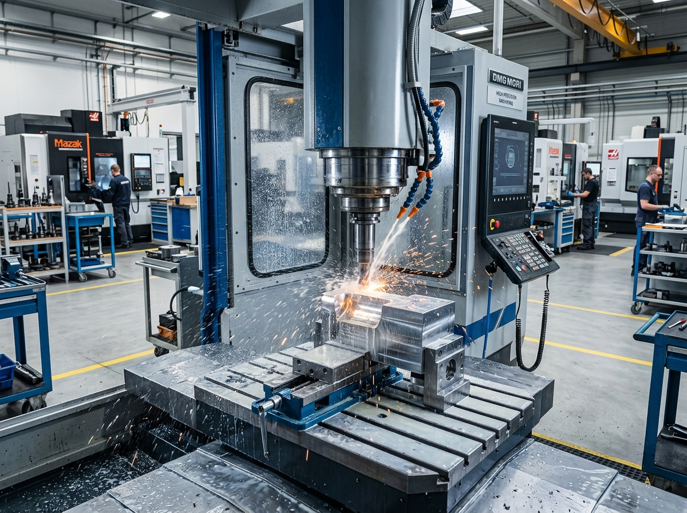

Big Fameは什器案件で何を担当しますか？
要件整理、製造パートナーとの調整、図面・サンプル確認、生産フォロー、品質・梱包・輸出の調整を相談できます。正式な範囲は案件資料で確認します。
ビッグフェイム（碧豐實業有限公司）は、台湾を拠点に小売空間の商品展示デバイス（什器・金具）のカスタム開発とサプライチェーン連携を支援します。
公開素材では、生活雑貨、アパレル、スポーツ用品、アイウェアなどの店舗展示シーンを紹介しています。実際の案件範囲は要件により確認します。

設計開発・プロジェクト管理・貿易実務
台湾台北市に位置し、海外クライアントとの直接の窓口となります。3D図面化、仕様整合、プロトタイプの構造検討、そして金型・冶具の設計開発および輸出貿易実務を統括します。
一時保管・二重品質検査・物流・コンテナ装載
案件条件に応じて、組立、外観、数量、梱包、混載、出荷条件を調整します。確認項目は承認仕様に基づきます。
案件ごとのサプライヤー連携
案件条件に応じてサプライヤー、品質確認、納品条件を調整します。実際の供給範囲は案件ごとに確認します。
店舗ディスプレイ用の金具やフックは、製品そのものは小さく見えるかもしれません。しかし、私たちはその数ミリメートルの溶接痕の処理や、電鍍・焼付塗装の膜厚、防錆力といった「細部」が、店舗全体のブランドイメージを決定づけると信じています。
同時に、小売業界の急速なトレンド変化に対応するため、小ロットの試作打診から、短納期での製造、複数サプライヤーの製品混載など、クライアントのご要望に合わせてサプライチェーンを柔軟に組み替える実行力を持ち合わせています。
要件整理、製造パートナーとの調整、図面・サンプル確認、生産フォロー、品質・梱包・輸出の調整を相談できます。正式な範囲は案件資料で確認します。
金属、木材、アクリル、複合材を方向として相談できます。正式な材料、加工、供給範囲は図面、サンプル、案件条件で確認します。